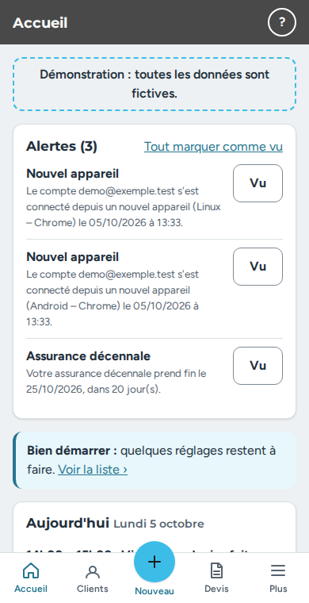
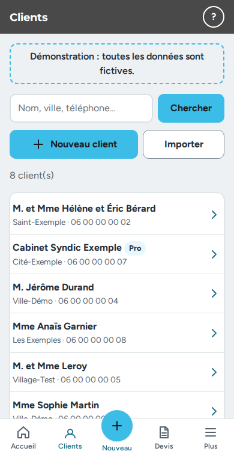
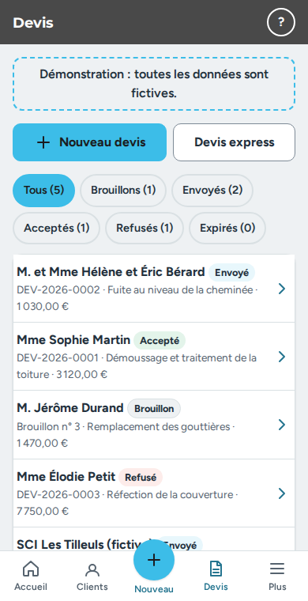
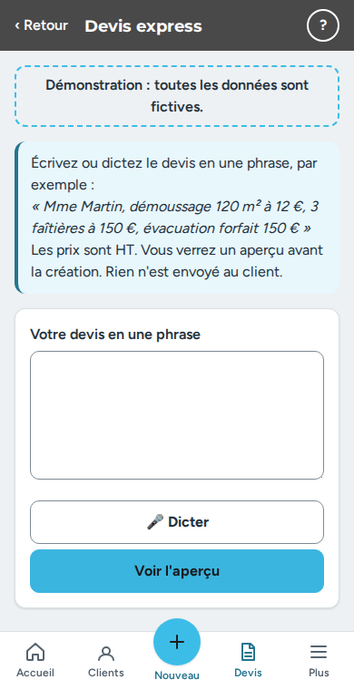
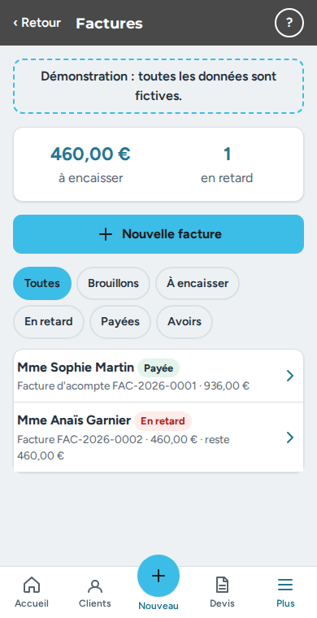
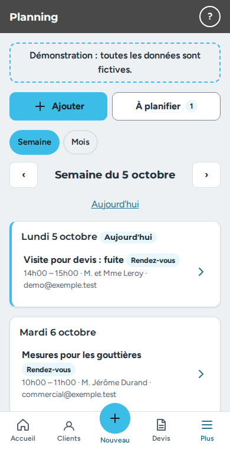
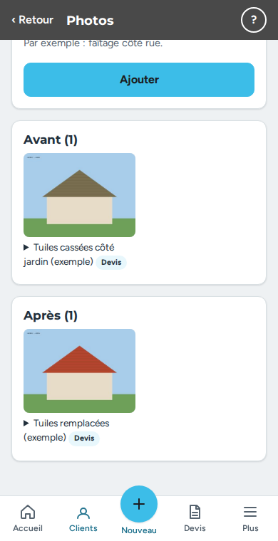
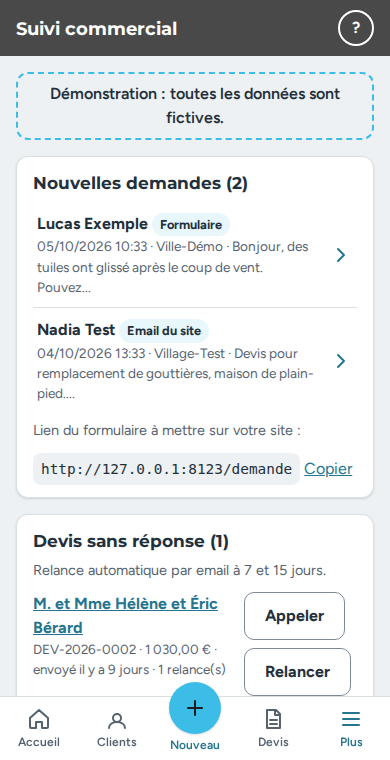
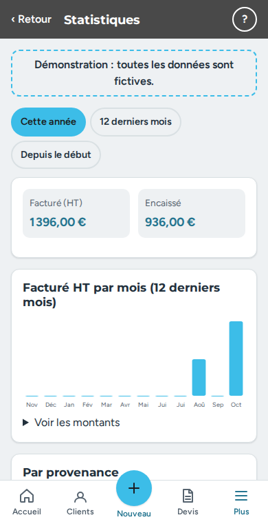

Démonstration : toutes les données sont fictives.
Bien démarrer (5/8)
- ✓ Coordonnées de l'entreprise (nom, adresse, SIRET, téléphone, email) : fait
- ✓ IBAN pour les virements : fait
- ✓ Assurance décennale à jour : fait
- ✓ Conditions générales de vente : fait
- ✓ Au moins 5 prestations dans le catalogue : fait
- ○ Envoi des emails réglé (Gmail) : à faire Régler
- ○ Notifications activées sur ce téléphone : à faire Régler
- ○ Sauvegarde faite ce mois-ci : à faire Régler
L'accueil
- Le bloc « Aujourd'hui » montre les rendez-vous et chantiers du jour, avec la météo, l'itinéraire et le bouton Appeler.
- « Appels à passer » liste les nouvelles demandes et les devis sans réponse depuis 7 jours.
- Touchez « Personnaliser l'accueil et la barre du bas » pour choisir les blocs, leur ordre et les deux boutons du milieu de la barre du bas.
Bon à savoir : Chaque compte a son propre accueil. Le commercial ne voit jamais le chiffre d'affaires.

Ouvrir la pageClients et chantiers
- Touchez Nouveau → Un client. Indiquez au moins le nom et un téléphone ou un email.
- Sur la fiche, ajoutez une ou plusieurs adresses de chantier (type de toiture, surface, pente, accès).
- Ajoutez des notes et des fichiers (photos, PDF) sur la fiche.
- Pour reprendre votre ancien fichier, touchez « Importer » dans la liste des clients (fichier CSV, par exemple enregistré depuis Excel).
Bon à savoir : L'application vous prévient si un client semble déjà exister (même téléphone ou même email).

Ouvrir la pageFaire un devis
- Touchez Nouveau → Un devis et choisissez le client.
- Ajoutez des lignes à la main ou depuis le catalogue ; ajoutez des sections et des options si besoin.
- Les totaux se calculent tout seuls. Enregistrez : le devis reste en brouillon tant qu'il n'est pas envoyé.
- Touchez « Envoyer » dans la barre du bas : le devis reçoit son numéro et son PDF est figé.
Bon à savoir : Un devis envoyé ne se modifie plus : faites une nouvelle version. Les prix se saisissent hors taxes.

Ouvrir la pageLe devis express (une phrase)
- Touchez Nouveau → Un devis express.
- Écrivez ou dictez une phrase, par exemple : “Mme Martin, démoussage 120 m² à 12 €, échafaudage forfait 600 €”.
- Vérifiez l'aperçu, puis créez le brouillon.
Bon à savoir : Le client doit déjà exister. Rien n'est envoyé : vous relisez le brouillon avant de l'envoyer.

Ouvrir la pageFaire signer un devis
- Sur place : ouvrez le devis envoyé et touchez « Faire signer ». Le client signe avec le doigt.
- À distance : le client ouvre son lien personnel, lit le devis et signe en ligne.
- Vous recevez une alerte dès que le devis est signé, refusé ou qu'une modification est demandée.
Bon à savoir : Pour un devis signé hors de vos locaux, le client a 14 jours pour se rétracter.
Ouvrir la page
Envoyer par email, SMS ou WhatsApp
- Sur un devis ou une facture, touchez « Envoyer » : le message est déjà rédigé d'après vos modèles.
- Vous pouvez aussi copier le message prêt ou l'envoyer par SMS ou WhatsApp avec le lien du client.
- Chaque email envoyé est noté sur le document.
Bon à savoir : Les emails partent de votre adresse Gmail, réglée dans Réglages → Emails.
Ouvrir la page
Factures et avoirs
- Depuis un devis accepté, touchez « Facturer » : facture complète, acompte, situation ou solde.
- Vérifiez le brouillon puis touchez « Émettre » : la facture reçoit son numéro et ne se modifie plus.
- Pour corriger une facture émise, faites un avoir (total ou partiel).
- Dans « Frais du chantier », notez vos achats avec la photo du ticket pour voir ce qu'il vous reste.
Bon à savoir : Une facture émise n'est jamais supprimée : elle est conservée 10 ans.

Ouvrir la pageEncaisser un paiement
- Sur la facture, touchez « Encaisser », indiquez le montant, la date et le mode de paiement.
- Le client peut aussi payer par carte avec son lien, si le paiement en ligne est activé.
- Les relances automatiques partent après l'échéance si vous cochez l'option sur la facture.
Bon à savoir : Un encaissement ne s'efface pas : une annulation ajoute une ligne inverse.
Ouvrir la page
Planning et rappels
- Touchez Nouveau → Un rendez-vous. Un chantier peut durer plusieurs jours.
- Les devis acceptés sans date sont dans Planning → À planifier.
- Vous recevez un rappel 1 heure avant et la veille à 19 h si les notifications sont activées. Le client peut recevoir un email 1 ou 2 jours avant.
- Touchez « Ajouter à mon agenda » pour mettre le rendez-vous dans l'agenda du téléphone.
Bon à savoir : La météo (pluie, vent fort, gel) est mise à jour chaque heure pour les adresses des 8 prochains jours.

Ouvrir la pagePhotos et rapports d'intervention
- Sur la fiche client ou un rendez-vous, ajoutez des photos : avant, pendant, après, problème, réparation.
- Touchez « Dessiner sur la photo » pour entourer ou flécher un défaut.
- Cochez « Mettre dans les devis et factures » pour les joindre en annexe des PDF.
- Faites le rapport d'intervention (constat, travaux, préconisations, photos) et envoyez-le au client.
Bon à savoir : Les photos sont réduites et la position GPS du téléphone est retirée.

Ouvrir la pageSuivi commercial
- Les demandes du formulaire de votre site arrivent dans « Nouvelles demandes » : touchez « Créer le client ».
- Les devis sans réponse sont relancés automatiquement à 7 et 15 jours.
- Demandez un avis Google aux clients satisfaits et proposez l'entretien aux anciens clients.
Bon à savoir : La lecture des emails du site se fait en lecture seule : rien n'est supprimé ni marqué comme lu.

Ouvrir la pageStatistiques
- Plus → Statistiques : facturé par mois, par provenance des clients et par compte.
- Statistiques → Site internet : visites, provenance et boutons cliqués sur votre site.
Bon à savoir : Le compteur du site n'utilise aucun cookie et n'enregistre aucune adresse IP.

Ouvrir la pageComptes
- Plus → Comptes → Inviter une personne : elle reçoit un lien pour choisir son mot de passe.
- Un commercial voit les clients, devis, rendez-vous, photos et rapports, mais jamais les factures ni les chiffres.
- Touchez « Désactiver » : la personne est déconnectée tout de suite.
Bon à savoir : Le lien d'invitation est valable 7 jours.
Ouvrir la page
Réglages
- Entreprise : coordonnées, SIRET, médiateur. Apparence : logo et couleurs.
- Documents : IBAN, CGV, validité des devis. Assurance : attestation décennale et date de fin.
- Emails : adresse Gmail et mot de passe d'application. Modèles d'emails : vos textes.
Bon à savoir : Les mots de passe et clés sont enregistrés chiffrés et ne sont jamais réaffichés.
Ouvrir la page
Préparer des devis avec Claude
- Réglages → Accès Claude : créez une clé et copiez-la (elle n'est affichée qu'une fois).
- Dans les réglages de l'environnement de Claude, ajoutez MC_API_URL et MC_API_TOKEN.
- Demandez à Claude de préparer un devis : il crée un brouillon que vous relisez avant l'envoi.
Bon à savoir : Ne collez jamais la clé dans une conversation. Vous pouvez la révoquer à tout moment.
Ouvrir la page
Sur le téléphone
- Ajoutez l'application à l'écran d'accueil (Partager → Sur l'écran d'accueil sur iPhone, menu ⋮ → Installer sur Android).
- Plus → Notifications : activez-les pour être prévenu d'un devis signé, d'un paiement ou d'un rendez-vous.
- Plus → Affichage : thème clair ou sombre, grands boutons.
- Sans réseau, les dernières pages ouvertes restent lisibles ; l'application réessaie quand la connexion revient.
Bon à savoir : Le bouton « ? » en haut de chaque page ouvre l'aide de la page.
Ouvrir la page